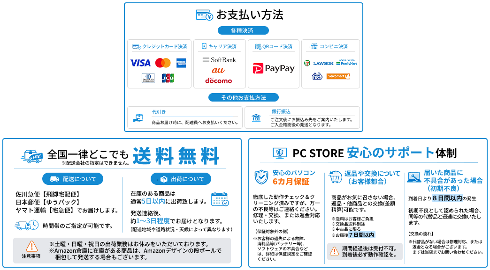

WORK

PC STORE様 ECサイト用バナー
DESIGN
PC STORE様 ECサイト用バナー3点セット
既存デザインをベースに、より「見やすく、洗練された印象」へ、リニューアルしました。
- 目的
- ECサイト内で使用する案内バナーとして、情報を分かりやすく整理し、
ユーザーが直感的に内容を把握できるデザインを目指して制作いたしました。 - ターゲット
- Web制作会社の採用担当者様
ECサイトをご利用される訪問ユーザー様 - 工夫した点
- スマートフォンで閲覧された際の視認性を重視し、3点のバナー全体に統一感が出るようデザインいたしました。
また、重要な情報は文字サイズや配色でメリハリをつけ、より直感的に内容が伝わる構成を意識しております。
全体的に余白を活かしながら、清潔感・信頼感の伝わるデザインを目指しました。 - 制作期間
- 2週間
- 使用言語・ツール
- Figma